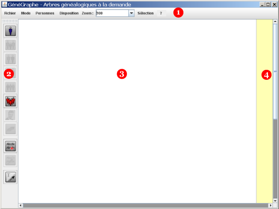
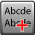
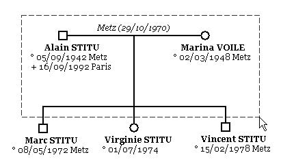
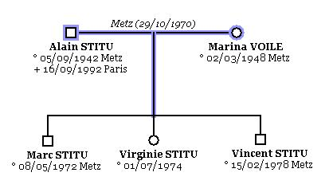
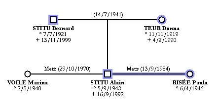
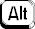
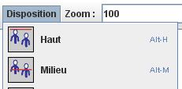

Principes généraux - Barre de menus - Menu Mode - Palette de boutons - Actions sur plusieurs objets - Sélection d'objets - Raccourci clavier
Quand vous démarrez GénéGraphe, vous obtenez la fenêtre suivante :

Les différentes zones sont :
Si vous modifiez le nombre de pages en largeur et/ou en hauteur (vois paramètres de l'arbre), les pages sont matérialisées par des traits pointillés bleus.
Dans les menus, certaines options apparaissent en gris clair. C'est quand la situation ne permet pas de les utiliser. Par exemple, vous ne pouvez pas demander à enregistrer un arbre si l'arbre courant est vide.
Dans la palette de boutons, certains sont en gris clair. C'est aussi parce qu'ils ne peuvent pas être utilisés actuellement. Par exemple, vous ne pouvez pas demander à ajouter les parents d'une personne si aucune personne n'est sélectionnée.
Le menu Fichier permet les opérations courantes de gestion des arbres :
Le menu Mode détermine le mode de travail de GénéGraphe.
Vous pouvez choisir d'afficher la chronologie ou l'arbre généalogique.
L'accès à la chronologie n'est possible que quand vous avez au moins une personne présente dans l'arbre.
Il y a 11 boutons qui sont :
| ajout d'une personne | |
| ajout des parents | |
| ajout du ou des conjoints | |
| ajout du ou des enfants | |
| compléter la fratrie | |
| compléter l'ascendance | |
| ajout de photos | |
| supprimer la sélection | |
|  | ajouter une étiquette |
| mise en forme d'une étiquette | |
| changer le mode de travail de GénéGraphe |
Notez que beaucoup de fonctionnalités s'appliquent quand une ou plusieurs personnes sont sélectionnées ou quand une ou plusieurs unions sont sélectionnées.
Pour sélectionner un objet, il suffit de cliquer dessus.
Pour sélectionner plusieurs objets, vous disposez de deux possibilités.
Sélection globale : placez votre curseur en dehors de tout objet, appuyez sur le bouton de votre souris et déplacez là. Le curseur change de forme et un rectangle en pointillés se dessine à l'écran. Tous les objets contenus dans ce rectangle seront sélectionnés quand vous relâcherez le bouton de la souris.

Ici, le rectangle de sélection contient les personnes Alain STITU et Marina VOILE. De plus, comme ces personnes sont unies, leur union sera aussi sélectionnée. Comme le rectangle de sélection englobe aussi le trait vertical qui relie les parents aux enfants, il est sélectionné. Voici l'écran quand on relâche le bouton de la souris :

Sélection individuelle : sélectionnez un objet, appuyez sur la touche Shift et cliquez sur le ou les objets que vous voulez ajouter à la sélection.
Quand un objet est sélectionné, il est entouré d'un trait bleu. Exemple :

Sur cet arbre, les personnes sélectionnées sont Bernard STITU, Donna TEUR, Alain STITU et Paula RISéE. Le couple Alain STITU-Paula RISéE est aussi sélectionné.
Certains menus proposent des raccourcis clavier pour mettre en oeuvre la commande correspondante. Par exemple, le menu " Disposition " propose le raccourci  + pour faire un alignement en haut et + pour faire un alignement au milieu.
